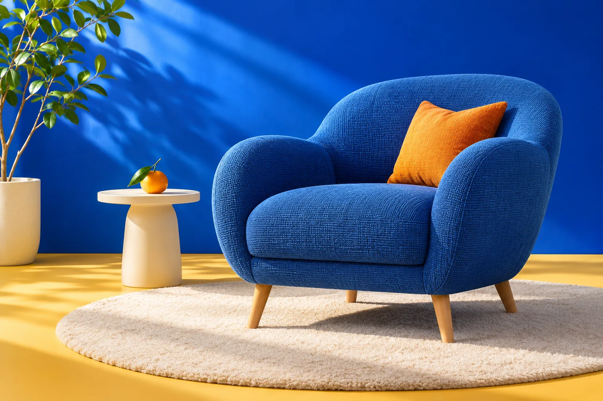

01
Мягкая мебель
Диваны, кресла и другая мебель с тканевой обивкой.
Химчистка мягкой мебели и ковров — чтобы любимые вещи снова радовали каждый день.

01 / УСЛУГИ
Когда хочется освежить пространство, начать можно с вещей, которыми вы пользуетесь каждый день.
Диваны, кресла и другая мебель с тканевой обивкой.
Ковры, которые делают дом теплее и уютнее.
Виды услуг и возможность обработки конкретного изделия уточняйте у компании.
02 / ПЕРЕД ЗВОНКОМ
Что нужно почистить: диван, кресло или ковёр.
Примерный размер и особенности материала.
Загрязнения и удобное время для связи.
03 / КОНТАКТЫ
Уточните стоимость, условия и возможность чистки вашего изделия по телефону.
+7 922 469-74-61 ↗КАЗАНЬ
ул. Братьев Батталовых,
20А, корп. 2
Контакты указаны по данным справочников. Их актуальность, адрес и условия работы необходимо уточнить.
Карточка в справочнике ↗